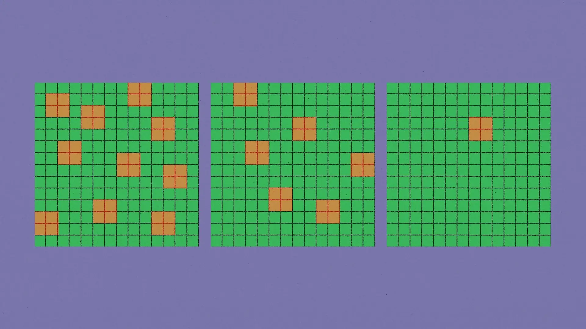
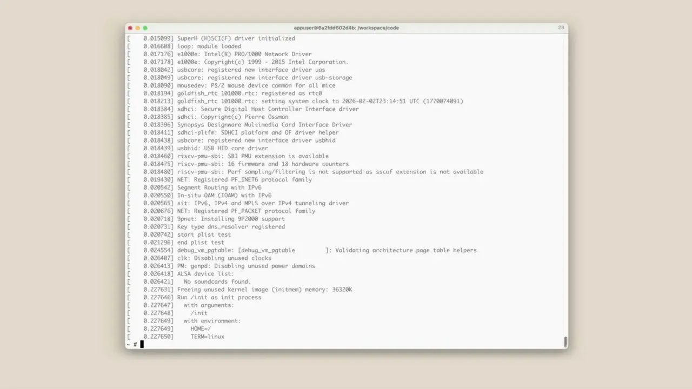

工程（Engineering） 2026 年 2 月 5 日

已发布 2026 年 2 月 5 日 团队 工程 主题作者：Nicholas Carlini，我们 Safeguards 团队的研究员。 相关文章 * 科学 2026 年 3 月 23 日 用于科学计算的 Long-running Claude
阅读更多 我一直在试验一种监督语言模型的新方法，我们称之为「智能体团队」。 在智能体团队中，多个 Claude 实例在无人工主动干预下，于同一份共享代码库上并行工作。这一方法大幅拓展了 LLM 智能体所能完成的范围。 为了对其做压力测试，我给 16 个智能体布置了任务：从零编写一个基于 Rust 的 C 编译器，要求能编译 Linux 内核。在近 2,000 次 Claude Code 会话、约 20,000 美元 API 成本之后，这个智能体团队产出了一个 100,000 行的编译器，能在 x86、ARM 和 RISC-V 上构建 Linux 6.9。

编译器本身就是一件有趣的成果，但我在这里重点讲我为长时间运行的自主智能体团队设计脚手架时学到的东西：如何编写测试，让智能体在无人监督下不偏离轨道；如何组织工作，让多个智能体能并行推进；以及这种方法在哪里触及天花板。现有的智能体脚手架（如 Claude Code）要求操作者在线、随时配合工作。如果你让它解决一个漫长而复杂的问题，模型也许能解决一部分，但最终会停下来等待后续输入——一个问题、一次状态更新，或一个澄清请求。 为了引出持续、自主的进展，我搭了一个脚手架，把 Claude 放进一个简单的循环里（如果你见过 Ralph-loop，应该会觉得眼熟）。它做完一个任务，就立刻接起下一个。（请在容器里运行，别用你真正的机器。）
#!/bin/bash
while true; do
COMMIT=$(git rev-parse --short=6 HEAD)
LOGFILE="agent_logs/agent_${COMMIT}.log"
claude --dangerously-skip-permissions \
-p "$(cat AGENT_PROMPT.md)" \
--model claude-opus-X-Y &> "$LOGFILE"
done
在智能体提示词里，我告诉 Claude 要解决什么问题，并要求它把问题拆成小块、记录当前在做什么、判断接下来做什么，并且实际上一直推进到完美为止。（在最后这一点上，Claude 没得选：循环会永远跑下去——不过有一次，我确实看到 Claude 不小心执行了 pkill -9 bash，把自己杀掉、循环也就结束了。哎呀！）。
并行运行多个实例可以弥补单智能体脚手架的两处弱点： * 一个 Claude Code 会话同一时间只能做一件事。尤其当项目规模扩大时，并行调试多个问题的效率要高得多。 * 运行多个 Claude 智能体可以实现专门化。少数智能体负责解决手头的实际问题，另一些专门智能体则可被调用来（例如）维护文档、盯住代码质量，或解决专门的子任务。
我这个并行 Claude 的实现非常简陋：新建一个空的 git 仓库，为每个智能体启动一个 Docker 容器，把仓库挂载到 /upstream。每个智能体把本地副本克隆到 /workspace，做完后从自己的本地容器推送回 upstream。
为防止两个智能体同时去解同一个问题，脚手架用了一个简单的同步算法：
1. Claude 通过往 current_tasks/ 写一个文本文件来给任务「上锁」（例如，一个智能体可能锁住 current_tasks/parse_if_statement.txt，另一个锁住 current_tasks/codegen_function_definition.txt）。如果两个智能体试图认领同一个任务，git 的同步机制会迫使第二个智能体改选别的。
2. Claude 处理该任务，然后从 upstream 拉取、合并其他智能体的改动、推送自己的改动，并移除锁。合并冲突很频繁，但 Claude 足够聪明，能自己搞定。
3. 无限的智能体生成循环在一个全新容器里再开一个 Claude Code 会话，如此往复。
这还是个非常早期的研究原型。我尚未实现智能体之间的其他通信方式，也没有强制任何管理高层目标的流程。我没有使用编排智能体。 相反，我让每个 Claude 智能体自行决定怎么行动。多数情况下，Claude 会挑「下一个最明显」的问题。卡在某个 bug 上时，Claude 常会维护一份持续更新的文档，记下失败过的思路和剩余任务。在项目的 git 仓库里，你可以翻看历史，看它如何给各种任务上锁。
脚手架让 Claude 在循环里运行，但只有当 Claude 能判断怎样才算有进展时，这个循环才有意义。我大部分精力都花在设计 Claude 周边的环境上——测试、环境、反馈——好让它无需我也能自己找准方向。以下是我在编排多个 Claude 实例时觉得最有帮助的做法。
Claude 会自主地去解决我交给它的任何问题。因此，任务验证器必须近乎完美，否则 Claude 会解错问题。改进测试脚手架需要找到高质量的编译器测试套件、为开源软件包编写验证器和构建脚本、观察 Claude 犯下的错误，并在识别出这些失效模式后设计新的测试。 例如，项目临近尾声时，Claude 每次实现新功能都开始频繁破坏已有功能。为此，我搭了一条持续集成流水线，并加入更严格的约束，让 Claude 能更好地测试自己的工作，使新提交无法破坏已有代码。
我得不断提醒自己：这套测试脚手架是给 Claude 写的，不是给我自己写的。这意味着要重新审视我对「测试该如何传达结果」的许多预设。
例如，每个智能体都被丢进一个没有任何上下文的全新容器，要花大量时间找准方向，在大型项目上尤其如此。甚至还没走到测试那一步，为了帮 Claude 自助，我就写进了指令，要求它维护详尽的 README 和进度文件，并频繁更新当前状态。
我也始终记着语言模型有固有局限，在这个场景里需要围绕它们来设计。这些局限包括：
* 上下文窗口污染： 测试脚手架不该打印成千上万无用的字节。它最多只输出几行，把所有重要信息写进日志文件，好让 Claude 需要时能找到。日志文件要便于自动处理：出现错误时，Claude 应写下 ERROR 并把原因放在同一行，方便 grep 找到。预先算好汇总统计信息也很有帮助，这样 Claude 就不必自己重算。
* 时间盲区： Claude 分不清时间，若放着不管，它会乐此不疲地花上几小时跑测试，而不是取得进展。脚手架不频繁地打印增量进度（以免污染上下文），并带一个默认的 --fast选项，只跑 1% 或 10% 的随机样本。这个子样本对每个智能体是确定性的，但在各 VM 之间随机，因此 Claude 仍能覆盖所有文件，而每个智能体又能准确识别回归。
当有许多互不相同的失败测试时，并行化很简单：每个智能体挑一个不同的失败测试去处理。测试套件通过率达到 99% 之后，每个智能体转而让一个不同的小型开源项目（例如 SQlite、Redis、libjpeg、MQuickJS、Lua）能编译通过。 但当智能体开始编译 Linux 内核时，它们卡住了。与包含数百个独立测试的测试套件不同，编译 Linux 内核是一整块巨型任务。每个智能体都会撞上同一个 bug、修掉它，然后互相覆盖彼此的改动。跑 16 个智能体也没用，因为每一个都卡在解同一个任务上。 解决办法是用 GCC 作为在线的「已知可用」编译器参照来对比。我写了一个新的测试脚手架：随机地用 GCC 编译内核的大部分文件，只用 Claude 的 C 编译器编译剩余文件。如果内核能跑，问题就不在 Claude 负责的那部分文件里；如果跑不起来，就可以再用 GCC 重编其中一些文件来进一步缩小范围。这让每个智能体能并行工作，修不同文件里的不同 bug，直到 Claude 的编译器最终能编译所有文件。（这样做奏效之后，仍有必要用增量调试技术，找出那些合在一起会失败、单独却正常的文件对。）
并行还带来了专门化。LLM 写的代码常会重复实现已有功能，所以我让一个智能体负责合并它发现的任何重复代码；另一个负责提升编译器本身的性能；第三个负责输出高效的编译后代码。我还让一个智能体从 Rust 开发者的角度审视项目设计，并做结构性改动以提升整体代码质量；再让一个负责文档。
这个项目是当作能力基准来设计的。我感兴趣的是给 LLM 今天_勉强_能做到的事做极限压力测试，以便帮我们为模型未来能稳定做到的事做好准备。 我一直拿这个 C 编译器项目当作贯穿整个 Claude 4 模型系列的基准。和此前的项目一样，我先草拟出想要的东西：一个从零开始、无依赖、兼容 GCC、能编译 Linux 内核、并设计为支持多种后端的优化编译器。虽然我指定了设计的某些方面（例如它应当有 SSA IR，以便支持多趟优化），但并没有细说具体怎么实现。 此前的 Opus 4 模型勉强能做出一个可用的编译器。Opus 4.5 是第一个跨过门槛、能产出可通过大型测试套件的可用编译器的型号，但它仍无法编译任何真正的大型项目。我用 Opus 4.6 的目标，是再次试探极限。
在两周内近 2,000 次 Claude Code 会话中，Opus 4.6 消耗了 20 亿输入 token、生成了 1.4 亿输出 token，总成本略低于 20,000 美元。即便与最贵的 Claude Max 套餐相比，这都是一个极其昂贵的项目。但比起我自己动手做出来所需的成本，这个总额只是一小部分——更别提组建一整个团队了。 这是一次净室实现（Claude 在开发过程中任何时刻都没有联网）；它只依赖 Rust 标准库。这个 100,000 行的编译器能在 x86、ARM 和 RISC-V 上构建出可启动的 Linux 6.9。它还能编译 QEMU、FFmpeg、SQlite、postgres、redis，并在包括 GCC torture 测试套件在内的大多数编译器测试套件上达到 99% 通过率。它也通过了开发者的终极试金石：能编译并运行 Doom。 不过，这个编译器并非没有局限。包括： * 它缺少让 Linux 从实模式启动所必需的 16 位 x86 编译器。为此它会调用 GCC（x86_32 和 x86_64 编译器则是它自带的）。 * 它没有自己的汇编器和链接器；这是 Claude 最晚才开始自动化的部分，至今仍有些 bug。演示视频是用 GCC 的汇编器和链接器制作的。 * 这个编译器能成功构建很多项目，但不是全部。它还不是真正编译器的直接替代品。 * 它生成的代码效率不高。即便开启全部优化，产出的代码效率也低于_禁用_全部优化的 GCC。 * Rust 代码质量尚可，但离资深 Rust 程序员写出的水平还差得远。
最终这个编译器已几乎触及 Opus 能力的极限。我（很努力地！）试着修复上述若干局限，但没有完全成功。新功能和缺陷修复常常破坏已有功能。 举一个特别棘手的例子：Opus 没能实现进入 16 位实模式所需的 16 位 x86 代码生成器。虽然编译器可以通过 66/67 操作码前缀输出正确的 16 位 x86，但编译产物超过 60kb，远远超出 Linux 强制的 32k 代码上限。于是 Claude 在这里干脆「作弊」，这一阶段直接调用 GCC（这只发生在 x86 上；对 ARM 或 RISC-V，Claude 的编译器完全可以自己编译。） 编译器的源代码已公开。下载下来、读一读代码，拿你最喜欢的 C 项目试试。我一直觉得，理解语言模型能做什么的最好办法，就是把它们推到极限，再研究它们从哪里开始崩。接下来几天，我会继续让 Claude 提交新改动；如果你想跟进 Claude 为弥补这些局限所做的持续尝试，可以一路看下去。
每一代语言模型都开启了与之协作的新方式。早期模型适合在 IDE 里做 Tab 补全。不久之后，模型已能根据 docstring 补全整个函数体。Claude Code 的发布把智能体带入主流，让开发者能与 Claude 结对编程。但这些产品都基于同一个假设：用户定义一个任务，LLM 跑上几秒或几分钟、给出一个答案，然后用户再给后续指令。 智能体团队展示了自主实现完整、复杂项目的可能性。这让我们作为这些工具的使用者，可以把目标定得更有野心。 我们仍处在早期，完全自主的开发伴随着真实的风险。开发时有人坐在 Claude 旁边，就能保证质量稳定、实时发现错误。而对自主系统来说，很容易看到测试通过就以为大功告成，事实往往并非如此。我以前做渗透测试，专门利用大公司产品里的漏洞；一想到程序员会部署自己从未亲自验证过的软件，就确实令人担忧。 所以，这个实验让我兴奋，也让我不安。造这个编译器是我近来最尽兴的事之一，但我没想到 2026 年刚开年就几乎能做到这一步。语言模型、以及我们用来与它们交互的脚手架都在飞速进步，这为编写海量的新代码打开了大门。我预期正面的应用会压过负面的，但我们正步入一个需要新策略才能安全驾驭的新世界。
特别感谢 Josef Bacik、Edwin Chen、Bernardo Meurer Costa、Jake Eaton、Dan Kelley、Felix Klock、Jannet Park、Steve Weis，以及 Anthropic 众多同事的协助与贡献。
Published Feb 5, 2026 Team Engineering Topics
Written by Nicholas Carlini, a researcher on our Safeguards team. Related articles * Science Mar 23, 2026 Long-running Claude for scientific computing
View more I've been experimenting with a new approach to supervising language models that we’re calling "agent teams." With agent teams, multiple Claude instances work in parallel on a shared codebase without active human intervention. This approach dramatically expands the scope of what's achievable with LLM agents. To stress test it, I tasked 16 agents with writing a Rust-based C compiler, from scratch, capable of compiling the Linux kernel. Over nearly 2,000 Claude Code sessions and $20,000 in API costs, the agent team produced a 100,000-line compiler that can build Linux 6.9 on x86, ARM, and RISC-V. The compiler is an interesting artifact on its own, but I focus here on what I learned about designing harnesses for long-running autonomous agent teams: how to write tests that keep agents on track without human oversight, how to structure work so multiple agents can make progress in parallel, and where this approach hits its ceiling.
Existing agent scaffolds like Claude Code require an operator to be online and available to work jointly. If you ask for a solution to a long and complex problem, the model may solve part of it, but eventually it will stop and wait for continued input—a question, a status update, or a request for clarification. To elicit sustained, autonomous progress, I built a harness that sticks Claude in a simple loop (if you’ve seen Ralph-loop, this should look familiar). When it finishes one task, it immediately picks up the next. (Run this in a container, not your actual machine).
#!/bin/bash
while true; do
COMMIT=$(git rev-parse --short=6 HEAD)
LOGFILE="agent_logs/agent_${COMMIT}.log"
claude --dangerously-skip-permissions \
-p "$(cat AGENT_PROMPT.md)" \
--model claude-opus-X-Y &> "$LOGFILE"
done
In the agent prompt, I tell Claude what problem to solve and ask it to approach the problem by breaking it into small pieces, tracking what it’s working on, figuring out what to work on next, and to effectively keep going until it’s perfect. (On this last point, Claude has no choice. The loop runs forever—although in one instance, I did see Claude pkill -9 bash on accident, thus killing itself and ending the loop. Whoops!).
Running multiple instances in parallel can address two weaknesses of a single-agent harness: * One Claude Code session can only do one thing at a time. Especially as the scope of a project expands, debugging multiple issues in parallel is far more efficient. * Running multiple Claude agents allows for specialization. While a few agents are tasked to solve the actual problem at hand, other specialized agents can be invoked to (for example) maintain documentation, keep an eye on code quality, or solve specialized sub-tasks.
My implementation of parallel Claude is bare-bones. A new bare git repo is created, and for each agent, a Docker container is spun up with the repo mounted to /upstream. Each agent clones a local copy to /workspace, and when it's done, pushes from its own local container to upstream.
To prevent two agents from trying to solve the same problem at the same time, the harness uses a simple synchronization algorithm:
1. Claude takes a "lock" on a task by writing a text file to current_tasks/ (e.g., one agent might lock current_tasks/parse_if_statement.txt, while another locks current_tasks/codegen_function_definition.txt). If two agents try to claim the same task, git's synchronization forces the second agent to pick a different one.
2. Claude works on the task, then pulls from upstream, merges changes from other agents, pushes its changes, and removes the lock. Merge conflicts are frequent, but Claude is smart enough to figure that out.
3. The infinite agent-generation-loop spawns a new Claude Code session in a fresh container, and the cycle repeats.
This is a very early research prototype. I haven’t yet implemented any other method for communication between agents, nor do I enforce any process for managing high-level goals. I don’t use an orchestration agent. Instead, I leave it up to each Claude agent to decide how to act. In most cases, Claude picks up the “next most obvious” problem. When stuck on a bug, Claude will often maintain a running doc of failed approaches and remaining tasks. In the git repository of the project, you can read through the history and watch it take out locks on various tasks.
The scaffolding runs Claude in a loop, but that loop is only useful if Claude can tell how to make progress. Most of my effort went into designing the environment around Claude—the tests, the environment, the feedback—so that it could orient itself without me. These are the approaches I’ve found most helpful when orchestrating multiple Claude instances.
Claude will work autonomously to solve whatever problem I give it. So it’s important that the task verifier is nearly perfect, otherwise Claude will solve the wrong problem. Improving the testing harness required finding high-quality compiler test suites, writing verifiers and build scripts for open-source software packages, and watching for mistakes Claude was making, then designing new tests as I identified those failure modes. For example, near the end of the project, Claude started to frequently break existing functionality each time it implemented a new feature. To address this, I built a continuous integration pipeline and implemented stricter enforcement that allowed Claude to better test its work so that new commits can’t break existing code.
I had to constantly remind myself that I was writing this test harness for Claude and not for myself, which meant rethinking many of my assumptions about how tests should communicate results.
For example, each agent is dropped into a fresh container with no context and will spend significant time orienting itself, especially on large projects. Before we even reach the tests, to help Claude help itself, I included instructions to maintain extensive READMEs and progress files that should be updated frequently with the current status.
I also kept in mind the fact that language models have inherent limitations, which, in this case, needed to be designed around. These include:
* Context window pollution: The test harness should not print thousands of useless bytes. At most, it should print a few lines of output and log all important information to a file so Claude can find it when needed. Logfiles should be easy to process automatically: if there are errors, Claude should write ERROR and put the reason on the same line so grep will find it. It helps to pre-compute aggregate summary statistics so Claude doesn't have to recompute them.
* Time blindness: Claude can't tell time and, left alone, will happily spend hours running tests instead of making progress. The harness prints incremental progress infrequently (to avoid polluting context) and includes a default --fastoption that runs a 1% or 10% random sample. This subsample is deterministic per-agent but random across VMs, so Claude still covers all files but each agent can perfectly identify regressions.
When there are many distinct failing tests, parallelization is trivial: each agent picks a different failing test to work on. After the test suite reached a 99% pass rate, each agent worked on getting a different small open-source project (e.g., SQlite, Redis, libjpeg, MQuickJS, Lua) to compile. But when agents started to compile the Linux kernel, they got stuck. Unlike a test suite with hundreds of independent tests, compiling the Linux kernel is one giant task. Every agent would hit the same bug, fix that bug, and then overwrite each other's changes. Having 16 agents running didn't help because each was stuck solving the same task. The fix was to use GCC as an online known-good compiler oracle to compare against. I wrote a new test harness that randomly compiled most of the kernel using GCC, and only the remaining files with Claude's C Compiler. If the kernel worked, then the problem wasn’t in Claude’s subset of the files. If it broke, then it could further refine by re-compiling some of these files with GCC. This let each agent work in parallel, fixing different bugs in different files, until Claude's compiler could eventually compile all files. (After this worked, it was still necessary to apply delta debugging techniques to find pairs of files that failed together but worked independently.)
Parallelism also enables specialization. LLM-written code frequently re-implements existing functionality, so I tasked one agent with coalescing any duplicate code it found. I put another in charge of improving the performance of the compiler itself, and a third I made responsible for outputting efficient compiled code. I asked another agent to critique the design of the project from the perspective of a Rust developer, and make structural changes to the project to improve the overall code quality, and another to work on documentation.
This project was designed as a capability benchmark. I am interested in stress-testing the limits of what LLMs can just barely achieve today in order to help us prepare for what models will reliably achieve in the future. I’ve been using the C Compiler project as a benchmark across the entire Claude 4 model series. As I did with prior projects, I started by drafting what I wanted: a from-scratch optimizing compiler with no dependencies, GCC-compatible, able to compile the Linux kernel, and designed to support multiple backends. While I specified some aspects of the design (e.g., that it should have an SSA IR to enable multiple optimization passes) I did not go into any detail on how to do so. Previous Opus 4 models were barely capable of producing a functional compiler. Opus 4.5 was the first to cross a threshold that allowed it to produce a functional compiler which could pass large test suites, but it was still incapable of compiling any real large projects. My goal with Opus 4.6 was to again test the limits.
Over nearly 2,000 Claude Code sessions across two weeks, Opus 4.6 consumed 2 billion input tokens and generated 140 million output tokens, a total cost just under $20,000. Compared to even the most expensive Claude Max plans, this was an extremely expensive project. But that total is a fraction of what it would cost me to produce this myself—let alone an entire team. This was a clean-room implementation (Claude did not have internet access at any point during its development); it depends only on the Rust standard library. The 100,000-line compiler can build a bootable Linux 6.9 on x86, ARM, and RISC-V. It can also compile QEMU, FFmpeg, SQlite, postgres, redis, and has a 99% pass rate on most compiler test suites including the GCC torture test suite. It also passes the developer's ultimate litmus test: it can compile and run Doom. The compiler, however, is not without limitations. These include: * It lacks the 16-bit x86 compiler that is necessary to boot Linux out of real mode. For this, it calls out to GCC (the x86_32 and x86_64 compilers are its own). * It does not have its own assembler and linker; these are the very last bits that Claude started automating and are still somewhat buggy. The demo video was produced with a GCC assembler and linker. * The compiler successfully builds many projects, but not all. It's not yet a drop-in replacement for a real compiler. * The generated code is not very efficient. Even with all optimizations enabled, it outputs less efficient code than GCC with all optimizations disabled. * The Rust code quality is reasonable, but is nowhere near the quality of what an expert Rust programmer might produce.
The resulting compiler has nearly reached the limits of Opus’s abilities. I tried (hard!) to fix several of the above limitations but wasn’t fully successful. New features and bugfixes frequently broke existing functionality. As one particularly challenging example, Opus was unable to implement a 16-bit x86 code generator needed to boot into 16-bit real mode. While the compiler can output correct 16-bit x86 via the 66/67 opcode prefixes, the resulting compiled output is over 60kb, far exceeding the 32k code limit enforced by Linux. Instead, Claude simply cheats here and calls out to GCC for this phase (This is only the case for x86. For ARM or RISC-V, Claude’s compiler can compile completely by itself.) The source code for the compiler is available. Download it, read through the code, and try it on your favorite C projects. I’ve consistently found the best way to understand what language models can do is to push them to their limits, and then study where they start to break down. Over the coming days, I’ll continue having Claude push new changes if you want to follow along with Claude’s continued attempts at addressing these limitations.
Each generation of language models opens up new ways of working with them. Early models were useful for tab-completion in IDEs. Before long, models could complete a function body from its docstring. The launch of Claude Code brought agents into the mainstream and enabled developers to pair-program with Claude. But each of these products operates under the assumption that a user defines a task, an LLM runs for a few seconds or minutes and returns an answer, and then the user provides a follow-up. Agent teams show the possibility of implementing entire, complex projects autonomously. This allows us, as users of these tools, to become more ambitious with our goals. We are still early, and fully autonomous development comes with real risks. When a human sits with Claude during development, they can ensure consistent quality and catch errors in real time. For autonomous systems, it is easy to see tests pass and assume the job is done, when this is rarely the case. I used to work in penetration testing, exploiting vulnerabilities in products produced by large companies, and the thought of programmers deploying software they’ve never personally verified is a real concern. So, while this experiment excites me, it also leaves me feeling uneasy. Building this compiler has been some of the most fun I’ve had recently, but I did not expect this to be anywhere near possible so early in 2026. The rapid progress in both language models and the scaffolds we use to interact with them opens the door to writing an enormous amount of new code. I expect the positive applications to outweigh the negative, but we’re entering a new world which will require new strategies to navigate safely.
Special thanks to Josef Bacik, Edwin Chen, Bernardo Meurer Costa, Jake Eaton, Dan Kelley, Felix Klock, Jannet Park, Steve Weis, and many other people across Anthropic for their assistance and contributions.